Tail docking is the surgical removal of part of a cow's tail. It is a veterinary surgical procedure performed for clear medical reasons — most commonly a badly injured, infected or diseased tail that cannot be saved. It is not a routine farm job, and it must never be done without anaesthesia.
This guide explains when tail docking is genuinely needed, the surgical and rubber-ring techniques, anaesthesia and pain control, possible complications, and the postoperative care that decides whether the stump heals cleanly.
When Is Tail Docking Needed? — Indications
A healthy tail is important — cows use it to swat flies and to signal discomfort. Docking is justified only when the tail itself is the problem and cannot be treated any other way.
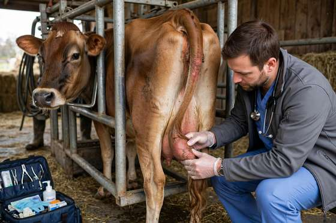
A badly injured tail — the commonest reason for docking
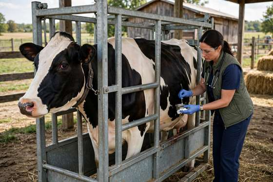
Examine the cow safely restrained in a crush
1
Severe tail injury or fracture(Tail crushed in a gate, broken or badly torn — damaged tissue may not heal and becomes a source of pain and infection)
2
Chronic infection or necrosis(Infection that does not respond to treatment, or dead tissue in the tail)
3
Tumours or growths(Lumps on the tail that need removal with a margin of healthy tissue)
4
Gangrene or frostbite(Dead tail tissue after severe cold, a banding accident or blocked blood supply)
5
Severe fly strike and maggot wounds(Deep maggot infestation that destroys tail tissue)
6
Tail paralysis or nerve damage(A hanging, useless tail that is repeatedly injured or soiled)
Surgical Technique — Step by Step
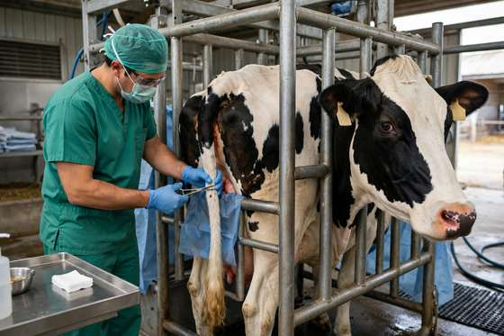
Tail docking surgery — performed by a veterinarian, under anaesthesia
1
Examine and decide(The veterinarian examines the tail, checks the cow's general health and chooses the level of amputation — always through healthy tissue)
2
Restrain safely(Cow held calmly in a crush; an assistant holds the tail steady)
3
Local anaesthesia(A ring block or local infiltration at the tail base; the veterinarian waits until the tail is fully numb)
4
Prepare the site(Hair clipped, skin washed and disinfected with antiseptic; sterile instruments and gloves)
5
Cut between vertebrae(A V-shaped skin flap is made and the tail is cut through the joint between two coccygeal vertebrae; blood vessels are tied off)
6
Close the stump(Skin flaps are sutured over the bone end to cover it completely)
7
Bandage and protect(A clean, padded bandage is applied; fly repellent is used around the wound)
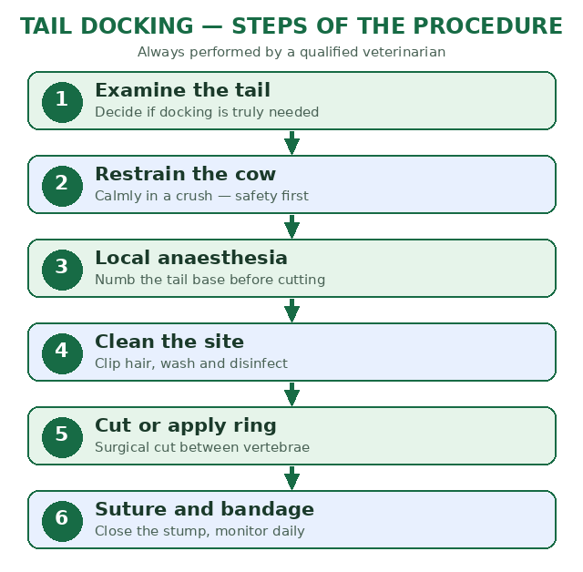
The procedure at a glance — 6 steps, always by a veterinarian
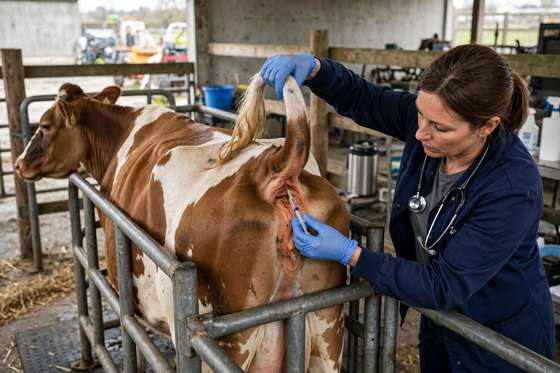
Step 3 — local anaesthesia before any cutting
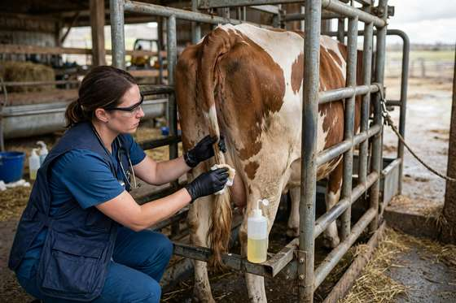
Step 4 — clip, wash and disinfect the site
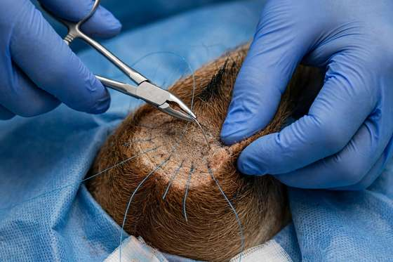
Step 6 — neat sutures close the stump
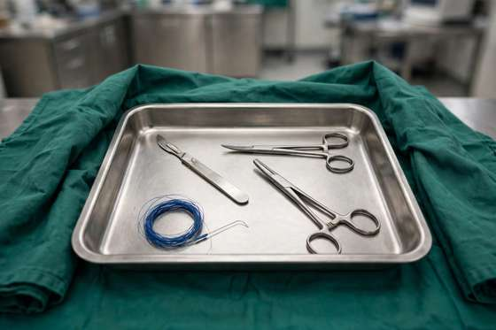
Sterile instruments, ready before surgery starts
Rubber-Ring (Bloodless) Method
A tight rubber ring (elastrator band) can be placed around the tail at the chosen level. The ring cuts off the blood supply and the tail tip drops off after about two to three weeks. The method needs no cutting and causes little bleeding, but it is slow, the tissue dies gradually, and it suits only selected cases. It must still be done with local anaesthesia and veterinary supervision — a ring placed wrongly causes severe pain, infection and a risk of tetanus. For most medical cases, the surgical method is faster, cleaner and more predictable.
Postoperative Care
Good aftercare decides whether the stump heals in two weeks or becomes a long, infected wound.
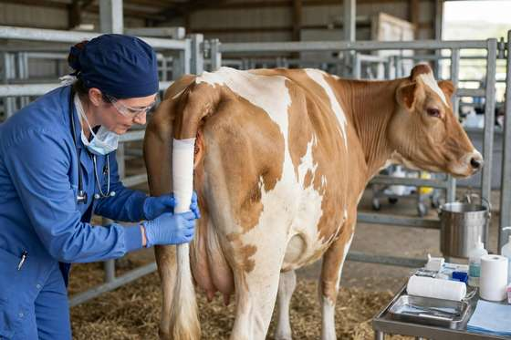
A clean, padded bandage protects the stump
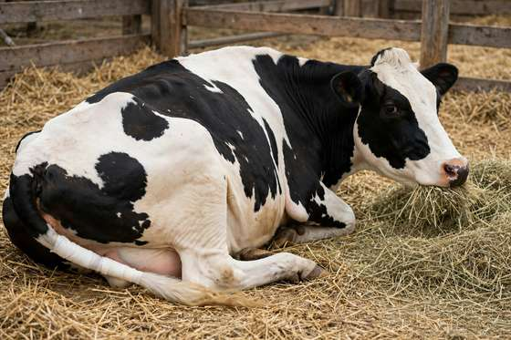
Rest in a clean, dry pen after surgery
1
Clean, dry pen(Keep the cow in a clean, dry pen with fresh bedding for at least a week)
2
Check the bandage daily(Change soiled or wet bandages; look for swelling, smell or discharge)
3
Fly control(Keep flies away from the wound with repellent and a clean pen; flies cause maggot infestation)
4
Pain relief and antibiotics(As prescribed by the veterinarian — never give medicines without veterinary advice)
5
Watch eating and behaviour(A cow that eats, drinks and ruminates normally is recovering well; dullness or fever needs a vet visit)
6
Suture removal(Stitches are usually removed after 10–14 days if healing is normal)
Complications — What Can Go Wrong
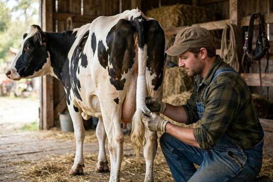
Daily checks catch problems early
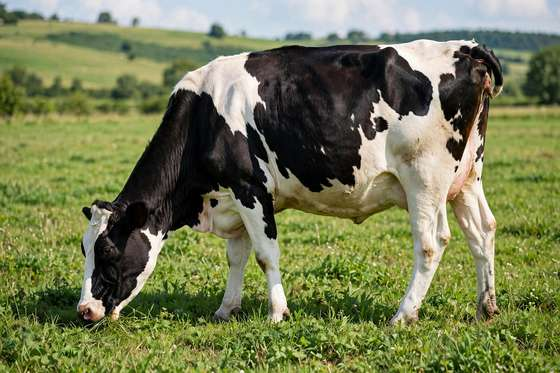
A healed stump — the cow back to normal life
1
Bleeding(Usually controlled by tying the vessels; a slipped ligature needs urgent attention)
2
Wound infection(Swelling, heat, pus or a bad smell at the stump)
3
Delayed healing(More likely in dirty pens, wet weather or weak animals)
4
Fly strike(Maggots in the wound if flies are not controlled)
5
Neuroma pain(Occasionally a sensitive nerve swelling forms at the stump)
Precautions and Field Guidelines
Important: Tail docking is a surgical procedure and must be performed by a qualified veterinarian under proper anaesthesia and aseptic conditions. Never attempt it at home — unskilled cutting causes severe pain, bleeding, infection and tetanus.
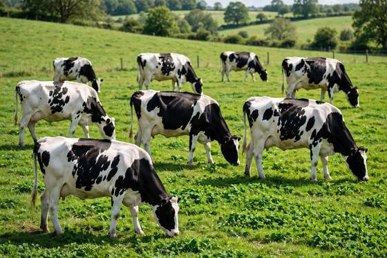
Prevention is best — safe handling keeps tails healthy
⚠ Important Tips:
Dock only for a medical reason — routine docking for convenience is discouraged and restricted in many countries.
Always use local anaesthesia and give pain relief after surgery.
Keep tetanus vaccination current — ask your veterinarian.
Avoid docking during heavy fly season if the procedure can wait.
Keep the pen clean and dry until the wound heals completely.
Record the date, method and medicines used for every surgery.
Frequently Asked Questions
What is tail docking in cattle?
Tail docking is the surgical removal of part of a cow's tail. It is a veterinary surgical procedure done for clear medical reasons, most commonly a badly injured, infected or diseased tail that cannot be saved. It is performed by a qualified veterinarian under local anaesthesia and aseptic conditions.
When is tail docking medically necessary in cattle?
Docking is justified when the tail itself is the problem: severe injury or fracture, chronic infection or dead tissue, tumours, gangrene or frostbite, deep maggot wounds, or a paralysed tail that is repeatedly injured. A healthy tail should not be docked — routine docking for convenience is discouraged and restricted in many countries.
How is tail docking performed in cattle?
The veterinarian restrains the cow in a crush, gives local anaesthesia at the tail base, clips and disinfects the site, and cuts through the joint between two coccygeal vertebrae, making skin flaps to cover the bone end. Blood vessels are tied off, the stump is sutured and bandaged. A rubber ring can also be used in selected cases — the tail tip drops off after about two to three weeks.
What are the complications of tail docking in cattle?
The main complications are bleeding, wound infection, delayed healing, fly strike with maggot infestation of the wound, and occasionally a painful nerve swelling (neuroma) at the stump. Good anaesthesia, aseptic technique, a clean dry pen and daily wound checks greatly reduce these risks.
How long does a docked tail take to heal?
With good care, a surgically docked tail stump heals in about two weeks. Stitches are usually removed after 10 to 14 days if healing is normal. Healing is slower in dirty or wet conditions, in weak animals, or if the wound becomes infected or infested with maggots.
Is tail docking painful for the cow?
Yes, cutting a tail without anaesthesia is very painful. That is why a veterinarian must always use local anaesthesia to numb the tail before the procedure, and give pain relief afterwards. A cow that eats, drinks and ruminates normally after surgery is recovering well.
Does tail docking improve milk hygiene?
No — research does not show that routine tail docking improves udder health or milk quality. Clean bedding, clean milking routines and fly control improve hygiene far more than docking. Docking should only be done for a genuine medical reason, decided by a veterinarian.
گائے کی دم کاٹنا کب ضروری ہوتا ہے اور اس کی دیکھ بھال کیسے کریں؟
دم کاٹنا صرف اس وقت ضروری ہوتا ہے جب دم شدید زخمی ہو، اس میں انفیکشن ہو، یا دم کا حصہ مردہ ہو جائے۔ یہ کام ہمیشہ مستند ڈاکٹر سے کروائیں جو بے ہوشی دے کر صاف ستھرے طریقے سے آپریشن کرے۔ آپریشن کے بعد گائے کو صاف خشک جگہ پر رکھیں، پٹی روزانہ چیک کریں، مکھیوں سے بچائیں اور ڈاکٹر کی ہدایت کے مطابق دوا دیں۔
Key Takeaway
Tail docking is a medical surgery, not a routine farm task. Done by a veterinarian with anaesthesia, asepsis and good aftercare, the stump heals in about two weeks and the cow returns to normal life. The best tail surgery is the one that never becomes necessary — safe handling, good fences and quick treatment of tail injuries prevent most cases. Follow current local veterinary authority guidance.